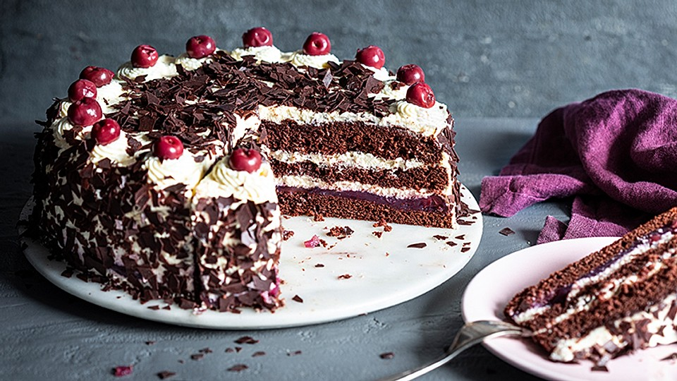

Black Forest cherry cake is a popular German dessert consisting of chocolate sponges that are coated in whipped cream and dotted with kirschwasser-infused cherries. Some varieties use the kirschwasser brandy to soak the chocolate layers or to lightly flavor the whipped cream. When assembled, the cake is lavishly decorated with whipped cream, chocolate shavings, and cherries.
Meal prep time : 1 hour 30 minutes
Servings : 14